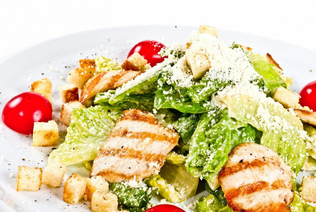

Салат "Цезарь"
«Цезарь» — популярный салат, одно из самых известных блюд североамериканской кухни.
Ингридиенты:

200 г салата Ромэн
50–70 г Пармезана
гренки:
100 г батона
3 ст.л. растительного масла
2 зубчика чеснока
соус:
1 яйцо
1 ч.л. горчицы (пасты)
1 ст.л. лимонного сока
3 ст.л. растительного масла
1 ч.л. Вустерского соуса
соль
перец
Приготовление
Готовим гренки.
В масло добавить выдавленный через чеснокодавку чеснок.
Оставить на 20 минут.
С батона срезать корки, нарезать кубиками.
На сковороду вылить чесночное масло.
Добавить нарезанный батон.
На небольшом огне пожарить до золотистого цвета.
Готовим соус.
В небольшой кастрюльке или ковшике вскипятить воду.
В кипящую воду положить яйцо и сразу убрать с огня.
Подержать яйцо в воде в течение 1 минуты.
Вынуть яйцо, остудить в течение 15 минут.
Яйцо разбить в миску.
Добавить горчицу и лимонный сок.
Взбить погружным блендером.
Добавить масло.
Взбить.
Добавить Вустерский соус, перемешать.
Должна получиться однородная масса.
Посолить, поперчить.
Пармезан натереть на терке.
Листья салата порвать руками.
Добавить соус.
Перемешать.
Добавить сухарики, перемешать.
Салат выложить на тарелки.
Посыпать пармезаном.
Подавать сразу.